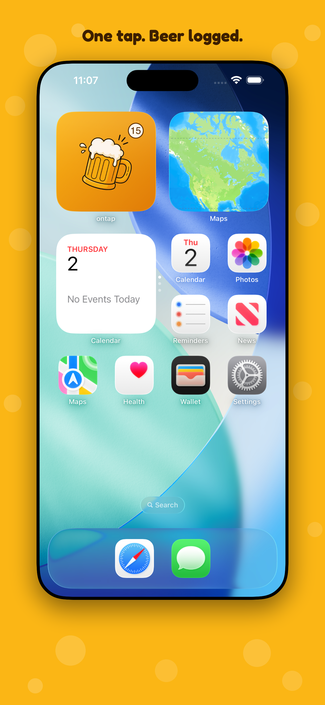
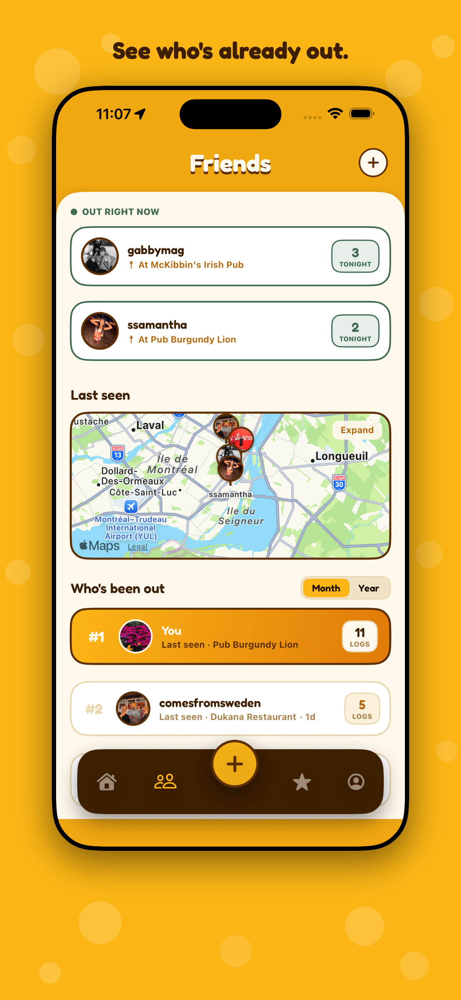
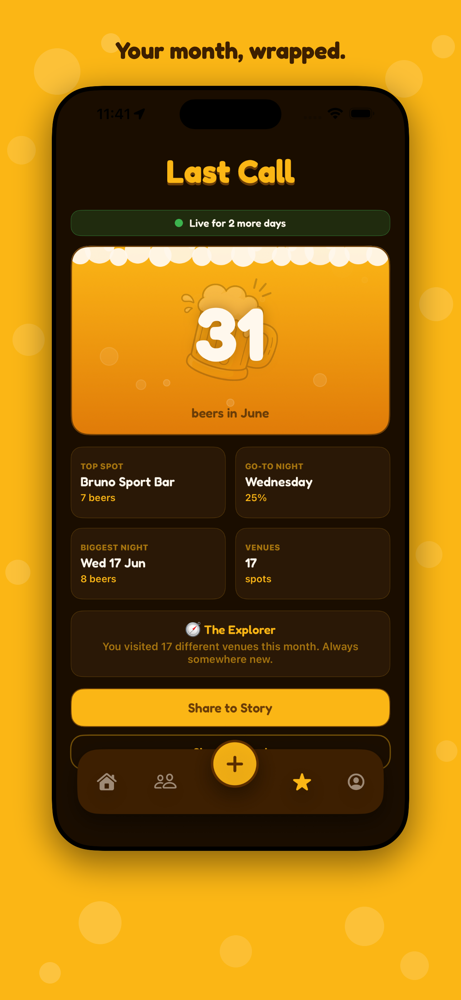

One tap on your home screen logs a beer and the spot you're at. See who's already out on a shared map — and get your month in beers, wrapped.
Coming to the App Store Launching soon on iPhone.

A home screen and lock screen widget logs a beer — with the venue you're at — in a single tap. No opening the app.
Add your mates and drop onto a shared map that shows who's already out and where. Skip the group chat, just go.
Every month, your beers, your spots and your nights out — wrapped up like a recap worth screenshotting.

ontap keeps a quiet tally of where you drink and who you're with, then hands it back at the end of the month — your top spots, your go-to night, your map filling up over time. You didn't keep a diary. You just tapped a button.